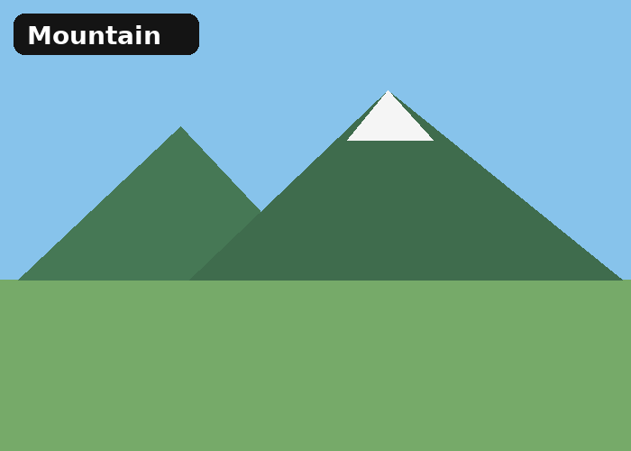
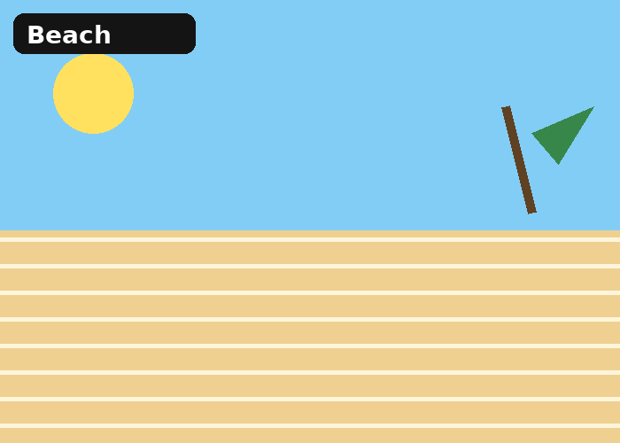
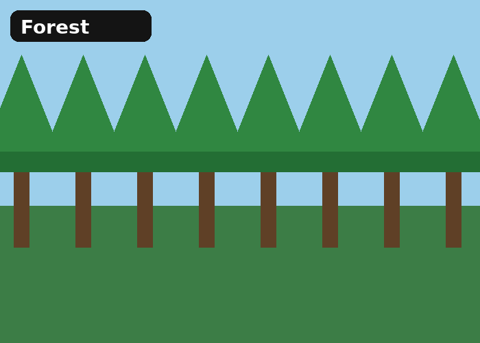
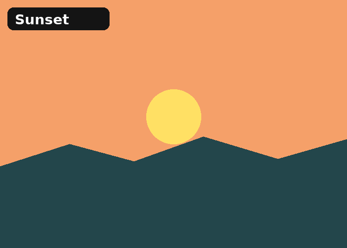
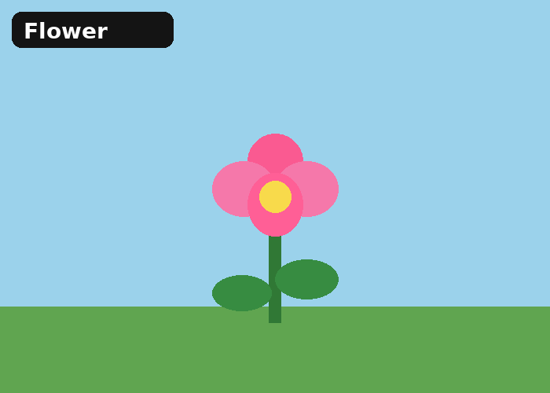
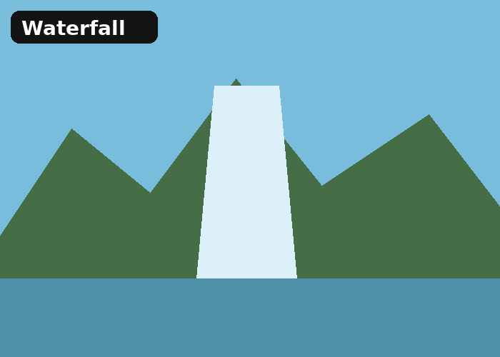
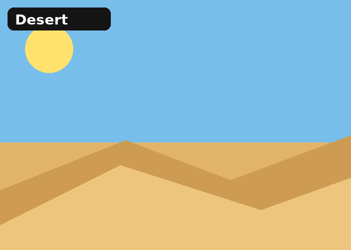
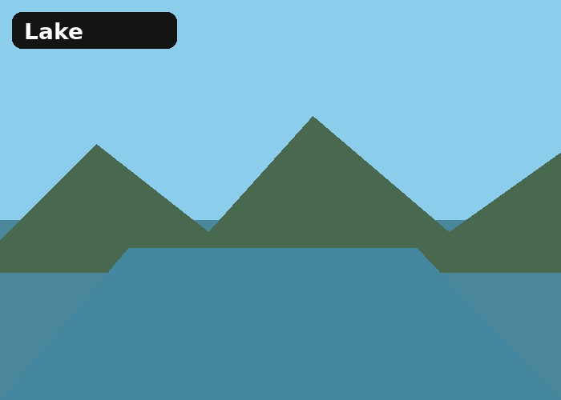
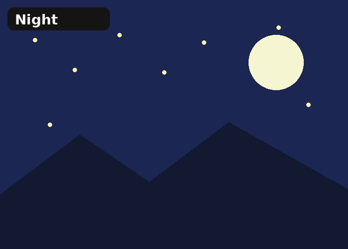

This gallery shows nine simple scenes inspired by nature, including mountains, beaches, forests, flowers, and night skies. Each picture has a short caption describing the scene.
The goal of this page is to practice responsive design. The gallery changes from one column on small screens to two columns on tablets and a larger two-column layout on desktop screens.








